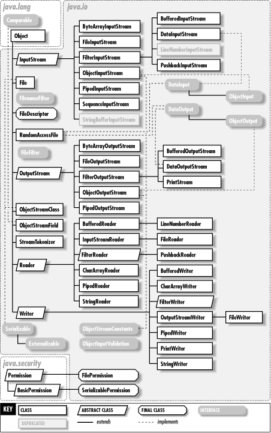
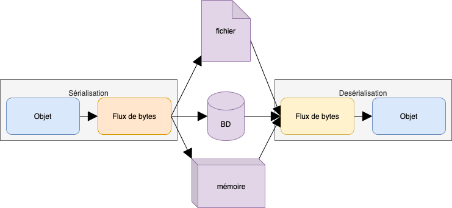

Langage JAVA
Les entrées/sorties
Module INF330 - Programmation avancée
Gustavo BOBEFF
2021 - 2022

Flux
En java, toutes les entrées/sorties sont gérés par des flux (= streams).
Un flux est une série d’informations envoyée sur un canal de communication entre deux entités.
Package standard java.io
- Byte Streams lecture/écriture des données binaires.
- Character Streams lecture/écriture des chaînes de caractères
- Buffered Streams lecture/écriture optimisée pour réduire le
nombre d'appels à l'API.
- Scanning/Formatting lecture/écriture de text formaté.
- I/O depuis/vers la ligne de commande lecture/écriture standard.
- Data Streams lecture/écriture de données primitive.
- Object Streams lecture/écriture d'objects.
Package standard java.io : Implémentation

Exemple : Entrée/Sortie standard
import java.io.*;
public class Lecture01Clavier {
public static void main(String[] args) {
try {
// Input
Reader in = new InputStreamReader(System.in);
// Reader
BufferedReader flux = new BufferedReader(in);
System.out.print("Entrez votre prenom : ");
String prenom = flux.readLine();
System.out.println("Bonjour " + prenom);
flux.close();
} catch (IOException ioe) {
System.err.println(ioe);
}
}
}
|
Architecture : System.in(clavier) => [InputStreamReader] + [BufferedReader]
=> System.out(console)
Lecture/Ecriture des fichiers
import java.io.IOException;
import java.nio.file.Paths;
public class Lecture02FichierText {
public static void main(String[] args) {
try {
String currentDir = Paths.get("").toAbsolutePath().toString();
String textFileName = currentDir + "/resources/data.txt";
// Reading text file
FileReader fileReader = new FileReader(textFileName);
// Buffering text stream
BufferedReader reader = new BufferedReader(fileReader);
while (reader.ready()) {
String[] line = reader.readLine().split(" ");
for (String s : line) {
// impression des mots séparés par '|'
System.out.print(s + "|");
}
System.out.println();
}
reader.close();
fileReader.close();
} catch (FileNotFoundException e) {
e.printStackTrace();
} catch (IOException e) {
e.printStackTrace();
}
}
}
|
Architecture : fichier.txt => [FileReader] + [BufferedReader] => System.out
Lecture avec try-with-resources (Java 9)
import java.io.*;
import java.nio.file.Paths;
public class Lecture03FichierWithClosables {
public static void main(String[] args) throws FileNotFoundException {
String currentDir = Paths.get("").toAbsolutePath().toString();
String textFileName = currentDir + "/resources/data.txt";
// Reading text file
FileReader fileReader = new FileReader(textFileName);
// Buffering text stream
BufferedReader reader = new BufferedReader(fileReader);
try (reader){
while (reader.ready()) {
String[] line = reader.readLine().split(" ");
for (String s : line) {
// impression des mots séparés par '|'
System.out.print(s + "|");
}
System.out.println();
}
// reader.close();
// fileReader.close();
} catch (FileNotFoundException e) {
e.printStackTrace();
} catch (IOException e) {
e.printStackTrace();
}
}
}
|
Architecture : fichier.txt => [FileReader] + [BufferedReader] => System.out
Fermeture des flux (entrée et/ou sortie) implicite.
Streaming de ressources du package
import java.io.*;
public class Lecture04FichierUsingInputStream {
public static void main(String[] args) throws FileNotFoundException {
// Streaming d'une ressource du classpath
InputStream stream = Lecture04FichierUsingInputStream.class.getResourceAsStream("data.txt");
BufferedReader reader = new BufferedReader(new InputStreamReader(stream));
try (reader){
while (reader.ready()) {
String[] line = reader.readLine().split(" ");
for (String s : line) {
// impression des mots séparés par '|'
System.out.print(s + "|");
}
System.out.println();
}
} catch (FileNotFoundException e) {
e.printStackTrace();
} catch (IOException e) {
e.printStackTrace();
}
}
}
|
Architecture : fichier.txt => [InputStream] + [InputStreamReader] +
[BufferedReader] => System.out
Streaming d'un fichier ressource embarqué dans un le paquet à déployer.
Utilisation d'un scanner pour le traitement de texte (plus simple)
import java.io.*;
import java.util.Scanner;
public class Lecture05FichierUsingInputStreamWtihScanner {
public static void main(String[] args) throws FileNotFoundException {
InputStream stream = Lecture05FichierUsingInputStreamWtihScanner.class.getResourceAsStream("data.txt");
Scanner scanner = new Scanner(stream);
try (scanner){
while (scanner.hasNext()) {
String s = scanner.next();
System.out.println(String.format("s:%s - ",s));
}
}
}
}
|
Architecture : fichier.txt => [InputStream] + [Scanner] => System.out
Sérialisation et désérialisation

- Sérializer un objet consiste à le convertir en un tableau
d'octets, que l'on peut ensuite écrire dans un fichier, envoyer sur un réseau au travers
d'une socket etc...
- Tous les langages orientés objet disposent de libraires pour sérialiser les objets :
- pickle pour Python
- boost pour C++
- java.io pour Java
- La sérialisation est utilisée principalement pour sauvegarder l’état d’objets localement ou
pour transférer des objets entre programmes.
- En Java, pour être sérialisable, un objet doit implémenter l’interface Serializable.
- La désérialisation est l’étape opposée à la sérialisation
c’est-à-dire que des objets sont créés à partir d’un tableau d’octets.
Exemple : Sérialisation
import java.io.*;
public class TestSerialisation implements Serializable {
String aString;
public TestSerialisation(String aString) {
this.aString = aString;
}
public static void main(String[] args) throws Throwable {
TestSerialisation ts = new TestSerialisation("TestSerlisation");
FileOutputStream fos = new FileOutputStream(
new File("/tmp/TestSerialisation.ser"));
ObjectOutputStream oos = new ObjectOutputStream(fos);
oos.writeObject(ts);
oos.close();
fos.close();
}
}
|
$ hexdump -C /tmp/TestSerialisation.ser
00000000 ac ed 00 05 73 72 00 11 54 65 73 74 53 65 72 69 |....sr..TestSeri|
00000010 61 6c 69 73 61 74 69 6f 6e 1f 7e 4a 41 a0 3c fe |alisation.~JA.<.|
00000020 73 02 00 01 4c 00 07 61 53 74 72 69 6e 67 74 00 |s...L..aStringt.|
00000030 12 4c 6a 61 76 61 2f 6c 61 6e 67 2f 53 74 72 69 |.Ljava/lang/Stri|
00000040 6e 67 3b 78 70 74 00 0f 54 65 73 74 53 65 72 6c |ng;xpt..TestSerl|
00000050 69 73 61 74 69 6f 6e |isation|
00000057
|
Exemple : Désérialisation
import java.io.*;
public class TestDeserealisation {
public static void main(String[] args) throws Throwable {
FileInputStream fis = new FileInputStream(
new File("/tmp/TestSerialisation.ser"));
ObjectInputStream ois = new ObjectInputStream(fis);
TestSerialisation ts = (TestSerialisation) ois.readObject();
System.out.println("mc.aString = " + ts.aString);
}
}
|
mc.aString = TestSerlisation
|